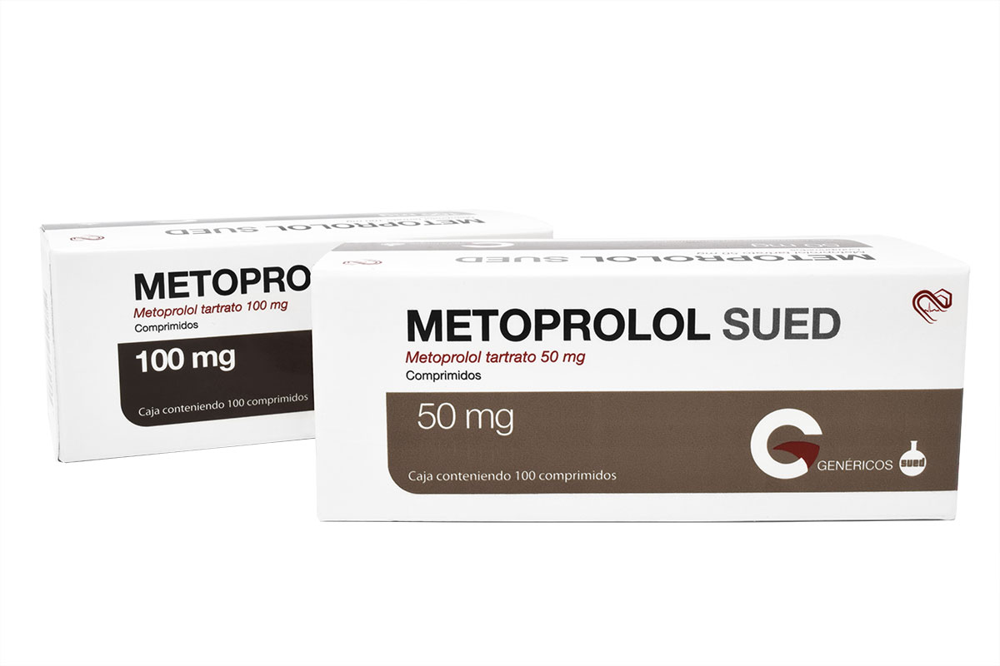
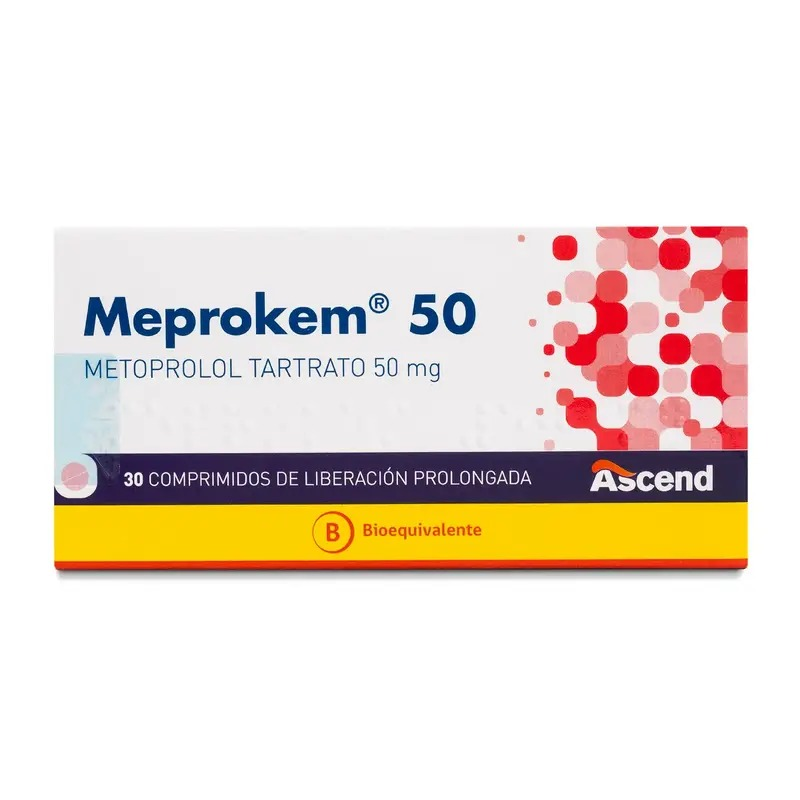
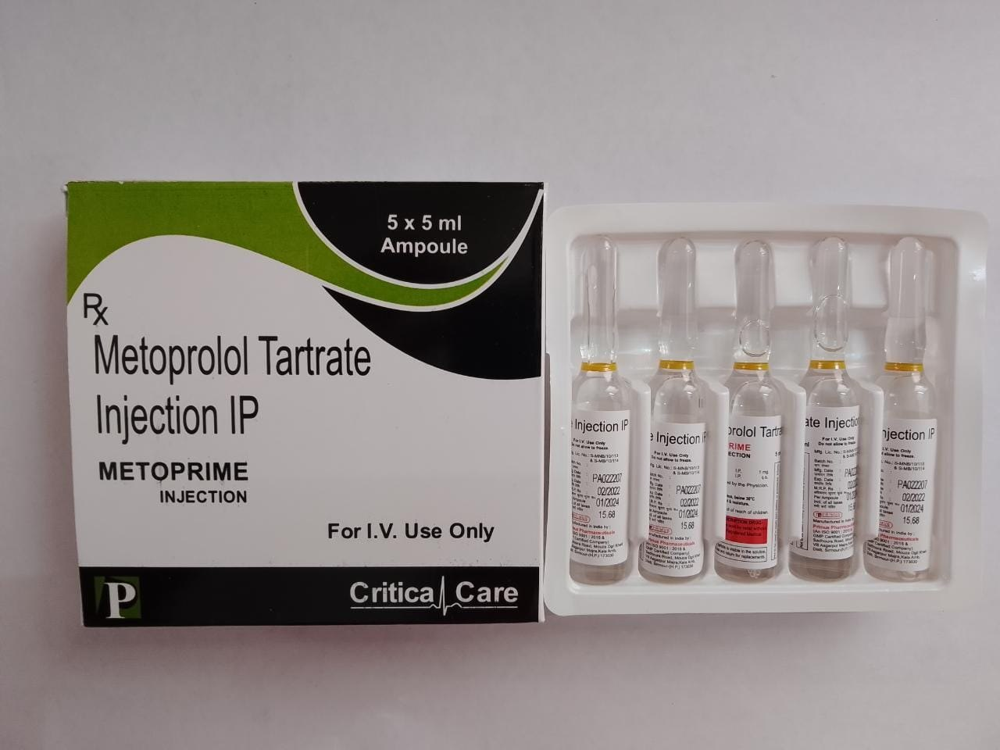
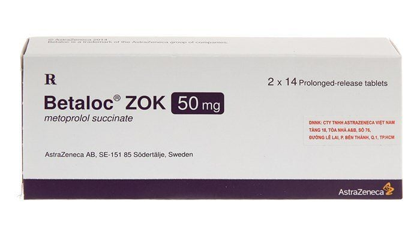
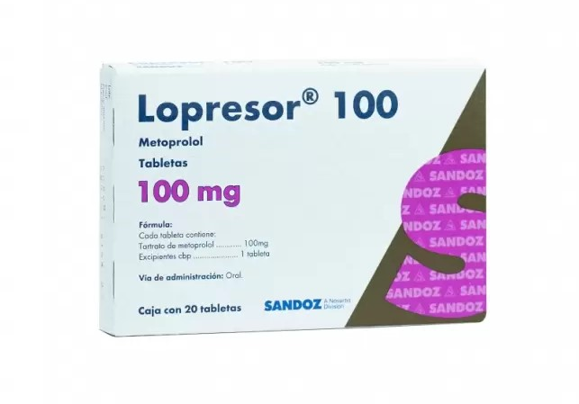
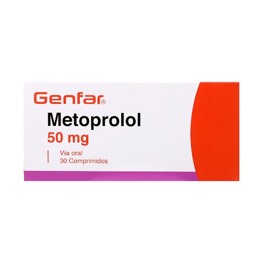
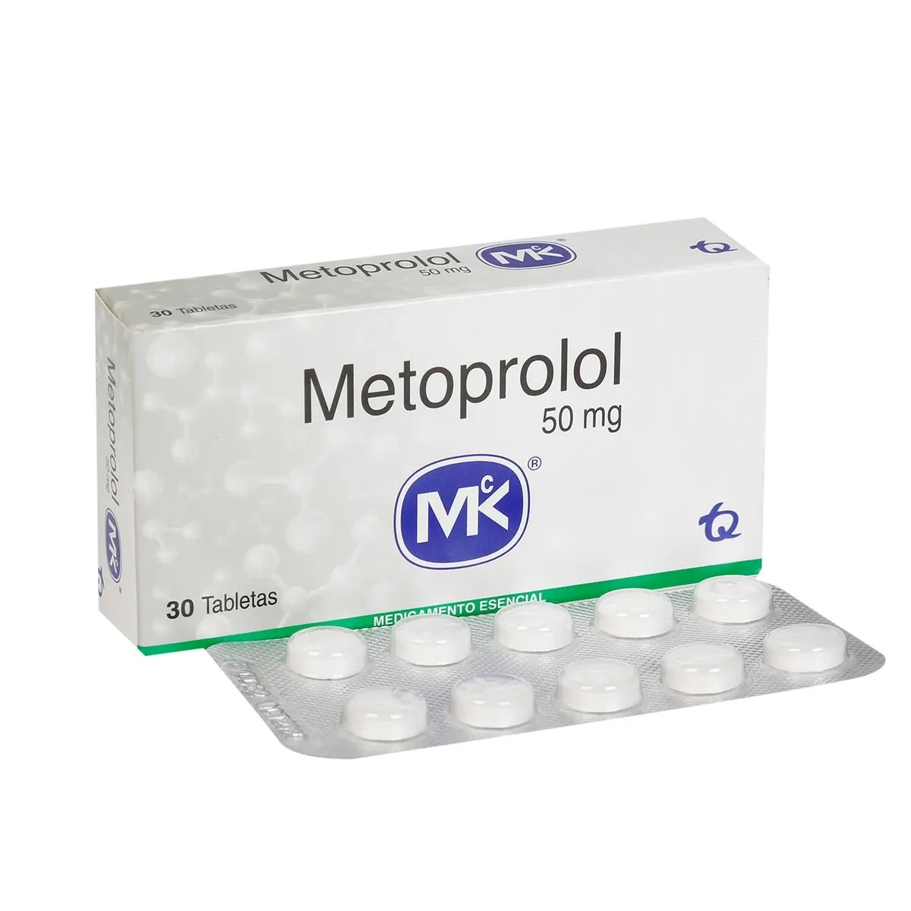

La caracterización completa del metoprolol requiere el análisis de múltiples propiedades y características que definen su identidad química, comportamiento físico y aplicaciones farmacéuticas. A continuación, presentamos los datos fundamentales que permiten identificar, clasificar y comprender este medicamento desde una perspectiva científica rigurosa.
El metoprolol está disponible en diversas presentaciones farmacéuticas diseñadas para diferentes necesidades clínicas y vías de administración. Cada presentación tiene características específicas de liberación, dosificación y uso clínico que determinan su selección según el perfil del paciente y la condición a tratar. Comprender estas diferencias es fundamental para la prescripción adecuada y el uso seguro del medicamento.

Metoprolol tartrato
25 mg, 50 mg, 100 mg
Uso: 2–3 veces al día

Metoprolol succinato / Retard / Zok
25 mg, 50 mg, 100 mg, 200 mg
Uso: 1 vez al día

Solución 1 mg/ml (tartrato)
Ampollas o viales
Uso hospitalario
El metoprolol se comercializa bajo diversos nombres comerciales según el laboratorio farmacéutico y la región. Estos nombres pueden variar, pero todos contienen el mismo principio activo (metoprolol) con idéntica estructura química y actividad farmacológica. La elección entre diferentes marcas comerciales generalmente se basa en disponibilidad, precio y preferencia del prescriptor o paciente.

Nombres comerciales
Betaloc® / Betaloc Zok® (puede variar según país/laboratorio)

Nombre comercial
Lopressor® (puede variar según país/laboratorio)

Nombre comercial
Metoprolol Genfar® (puede variar según país/laboratorio)

Nombre comercial
Metoprolol MK® (puede variar según país/laboratorio)
Es fundamental comprender las diferencias entre medicamentos genéricos y de marca para tomar decisiones informadas sobre el tratamiento. Aunque ambos contienen el mismo principio activo, existen diferencias importantes en términos de desarrollo, regulación y costo.
Las propiedades fisicoquímicas del metoprolol determinan su comportamiento en diferentes medios, su estabilidad, solubilidad y biodisponibilidad. Estas características son fundamentales para la formulación farmacéutica, el almacenamiento y la administración del medicamento. La siguiente tabla resume las principales propiedades fisicoquímicas del metoprolol base y sus sales más comunes.
| Propiedad | Valor / Característica | Observaciones |
|---|---|---|
| Fórmula molecular | C₁₅H₂₅NO₃ | Peso molecular: 267.36 g/mol |
| Estado físico | Sólido cristalino | Color blanco a blanquecino |
| Punto de fusión | ~35-40 °C (base) ~120-125 °C (tartrato) |
Varía según la forma de sal |
| Densidad | ~1.03 g/cm³ | A temperatura ambiente |
| Solubilidad en agua | Baja (base) Alta (tartrato: ~700 mg/mL) Moderada (succinato: ~270 mg/mL) |
La solubilidad depende de la forma de sal utilizada |
| Solubilidad en solventes orgánicos | DMSO: Soluble Metanol: Soluble Cloroformo: Ligeramente soluble Éter: Poco soluble |
Mejor solubilidad en solventes polares |
| pKa | ~9.56 | Indica carácter básico débil; se protona en medio ácido |
| pH de solución acuosa | 5.0-7.5 (tartrato) 6.0-7.5 (succinato) |
Soluciones acuosas son ligeramente ácidas |
| Log P (coeficiente de partición octanol/agua) | ~1.88 | Indica lipofilicidad moderada |
| Hidroscopia | Higiroscópico | Absorbe humedad del ambiente |
| Estabilidad | Estable en condiciones normales Fotosensible |
Almacenar protegido de la luz; estable a temperatura ambiente |
| Temperatura de descomposición | >200 °C | Relativamente estable térmicamente |
| Índice de refracción | ~1.52 | Propiedad óptica característica |
| Presión de vapor | Muy baja | Indica baja volatilidad |
| Viscosidad | N/A (sólido) | No aplicable para forma sólida |